🧭 Cosa fa il livello di rete?
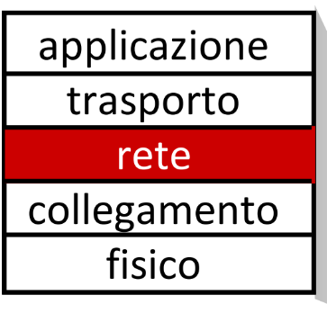 Il livello di rete si occupa di trasportare i segmenti (ossia i dati provenienti dal livello di trasporto, come TCP/UDP) da un host mittente a un host destinatario.
-
🟢 Mittente
- Prende il segmento ricevuto dal livello di trasporto
- Lo incapsula nel datagramma IP, che poi lo passa al livello di collegamento (tipo Ethernet, Wifi…)
-
🔵 Destinatario
- Quando il datagramma arriva, il livello di rete lo estrae e consegna il segmento al livello di trasporto
🌍 Protocollo di rete = IP (Internet Protocol) È il cuore del livello di rete ed è implementato ovunque
- host (client, server, smartphone)
- router
🛣️ Cosa fa un router?
- Esamina l’intestazione IP di ogni pacchetto che gli passa attraverso (ossia, guarda l’ip di destinazione)
- Decide dove mandare il pacchetto e lo instrada dalla posta di ingresso a quella di uscita
Questo processo avviene hop-by-hop, ossia ogni router prende una decisione fino a raggiungere la destinazione finale
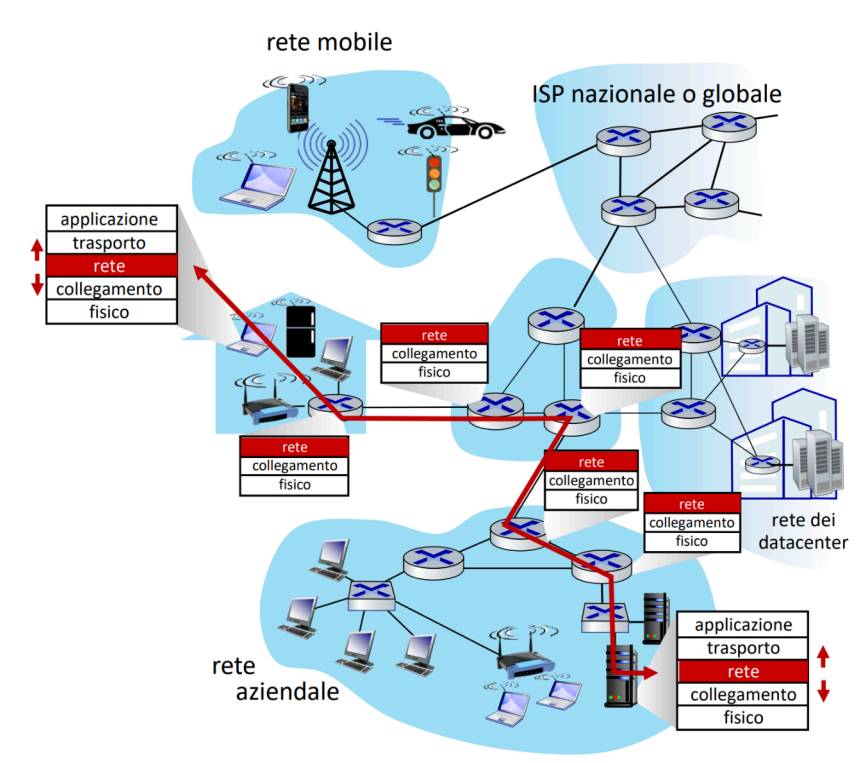
🚦 Le due funzioni chiave del livello di rete:
-
🔹Inoltro (forwarding) È il lavoro fatto da ogni singolo router per instradare ogni pacchetto (il discorso che facevamo prima dello “scegliere la porta corretta”). 🧠 È gestito dal piano dei dati(spiegazione dopo) 🟢 È un’operazione rapida e locale che riguarda ogni singolo pacchetto.
-
🔹 Instradamento (routing) È il processo globale che decide quale percorso seguire nella rete
- vengono utilizzati degli algoritmi (tipo Dijkstra) che creano e aggiornano le tabelle di routing nei router
- queste tabelle servono per sapere dove inoltrare i pacchetti per ogni possibile destinazione. 🧠 È gestito dal piano di controllo(dopo spiego meglio) 🟡 È una pianificazione a lungo termine, non si fa per ogni pacchetto.
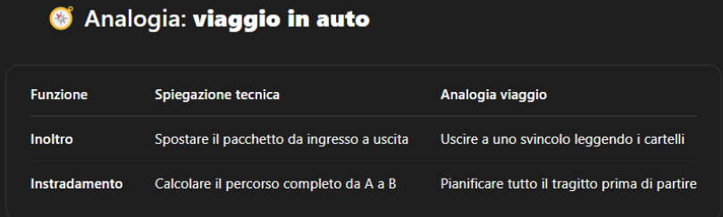
Le due parti del livello di rete
🔹 Piano dei dati
È la parte operativa di ogni singolo router.
È una funzione locale → ossia lavora sul momento, nel router stesso. Decide come inoltrare ogni pacchetto in base alla tabella di instradamento Guarda l’intestazione del pacchetto → lo manda verso la porta corretta.
📌 È quindi il meccanismo che fa fisicamente muovere i pacchetti.
🔸 Piano di controllo
È la parte che si occupa della logica globale della rete
Decide quali percorsi devono esistere tra origine e destinazione, costruendo e aggiornando le tabelle di instradamento (usate poi nel piano dei dati).
Funziona con algoritmi di routing che possono essere gestiti in due modi:
-
Algoritmi tradizionali (es. RIP, OSPF):
- implementati nei router stessi
-
SDN – Software Defined Networking:
- la logica dell’instradamento è gestita da server esterni/remoti
- in questo modo i router ricevono le regole da un controller centrale
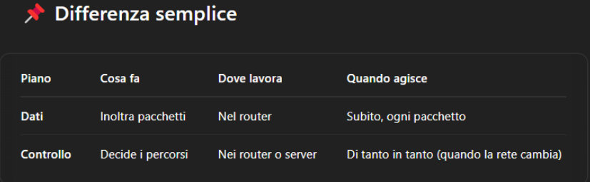

Software-Defined Networking (SDN)
🧠 Cos’è SDN?
Un’architettura in cui il piano di controllo non è più nei router ma viene centralizzato in un unico server remoto

🔧 Come funziona?
- I router diventano semplici dispositivi “esecutori” (solo inoltro)
- Non calcolano nulla da soli
- Il controller remoto
- riceve le informazioni della rete
- calcola le tabelle di instradamento per tutti i router
- e le installa nei router (frecce rosse verso il basso)
🧩 Che tipo di servizio offre la rete al trasporto dei datagrammi?
Modello di servizio
È come dire:
“Quando mando un datagramma, la rete mi garantisce qualcosa oppure no?”
Le risposte possono variare in base al tipo di servizio offerto.
📦 Servizi per un singolo datagramma
Questi si riferiscono a una singola unità dati
- 🔵 Consegna garantita: il pacchetto arriva sicuramente a destinazione
- 🔵 Consegna con ritardo limitato: tipo dice “il pacchetto deve arrivare entro 40ms” (serve per applicazioni sensibili al ritardo, tipo audio/video)
🔄 Servizi per un flusso di datagrammi
Qui si fa riferimento a più pacchetti consecutivi (es. una videochiamata)
- 🔵 Consegna in ordine: i pacchetti arrivano nell’ordine corretto
- 🔵 Banda minima garantita: la rete assicura una velocità certa (es. 2 Mbps)
- 🔵 Controllo della spaziatura: i pacchetti non arrivano troppo distanziati
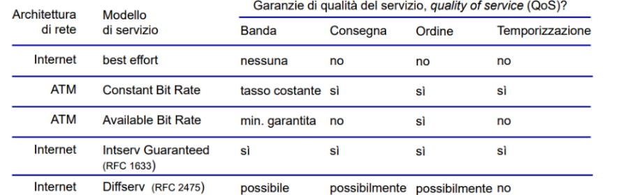
📌 Nota importante:
Il protocollo IP non garantisce nulla di tutto questo.
È un servizio “best effort” → ci prova, ma non promette niente.
Tutti questi modelli sono esempi di servizi che una rete potrebbe offrire,
ma non sono presenti nel modello IP base di Internet.
Perché il modello “best-effort”, per quanto non garantisca al 100%, funziona ed è diffuso?
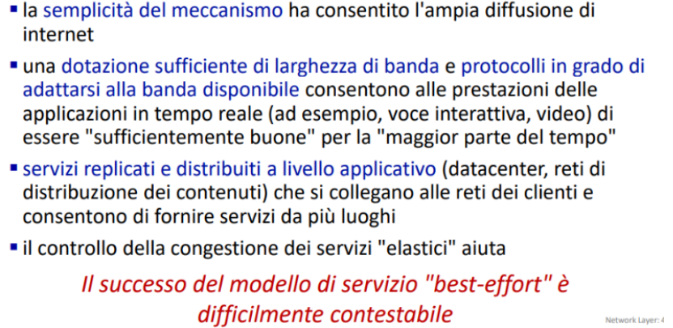
Router
🧱 Struttura del router: due piani
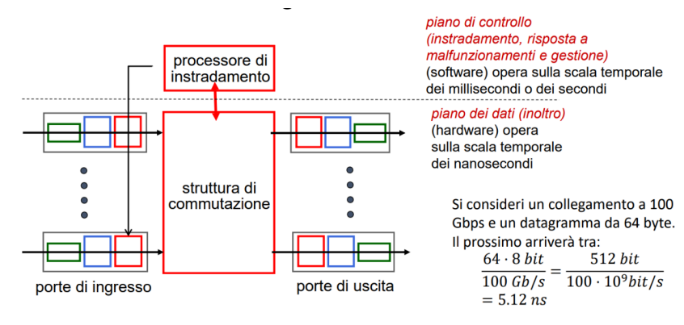
🔹 1. Piano di controllo
È gestito via software.
Si occupa di
- calcolare i percorsi
- rispondere a malfunzionamenti
- gestire configurazioni
Funziona a una scala lenta (millisecondi o secondi) perché non è coinvolto nel trattamento di ogni pacchetto.
🔸 2. Piano dei dati
Fatto in hardware, perché deve essere molto veloce.
Si occupa dell’inoltro dei pacchetti, ossia
- prende un pacchetto da una porta di ingresso
- lo sposta verso la porta di uscita giusta, passando per la struttura di commutazione
Funziona su scala molto rapida: nanosecondi.
🔁 Struttura di commutazione
- È il “cuore” del router,
- Serve per instradare velocemente i pacchetti dall’ingresso all’uscita.
ANALOGIA AUTOMOBILISTICA
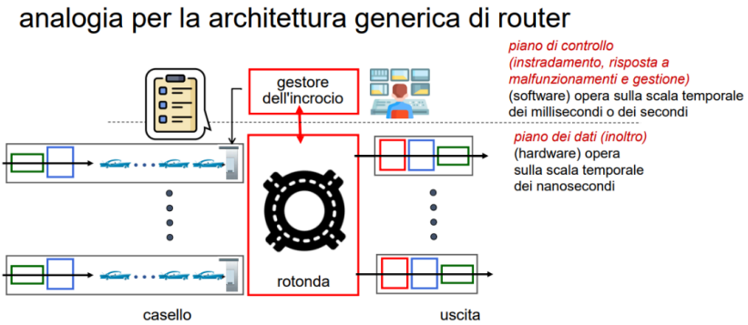
Porte di ingresso
🎯 Obiettivo generale
L’idea è quella far sì che ogni porta di ingresso possa ricevere e processare i pacchetti il più velocemente possibile, idealmente alla velocità di linea (senza la conseguente perdita di pacchetti).

Passi in sequenza
1️⃣ Terminazione di linea (verde)
- riceve i bit “grezzi” che arrivano sul cavo o sul collegamento (LIVELLO FISICO)
2️⃣ Elaborazione a livello di collegamento (blu)
- Interpreta il frame
- rimuove l’intestazione di livello 2 → si dice che “decapsula” il datagramma IP
In pratica (matrioska): rimuovi il guscio esterno (frame) → arrivi al datagramma
3️⃣ Ricerca e inoltro (rosso)
- Guarda i campi del datagramma
- consulta la tabella di inoltro locale
- decide la porta di uscita corretta
Processo che si chiama “Match Plus Action”
-
🟦 Match → confronta l’intestazione del pacchetto (soprattutto l’indirizzo IP di destinazione) con le voci nella tabella di inoltro
-
🟩 Action → decide l’azione da eseguire, cioè a quale porta mandare il pacchetto
4️⃣ Accodamento (buffer)
- Serve per mettere in coda i pacchetti se questi arrivano troppo in fretta o se la struttura di commutazione è occupata/lenta
Abbiamo i soliti problemi di congestione se il buffer si riempie
🧠 Commutazione decentralizzata
Questo vuol dire che questa struttura è progettata per far sì che le porte di ingresso eseguano le loro elaborazioni da sole, senza aspettare il processore centrale. Così il tutto è molto più veloce.
🔁 Cosa succede con commutazione centralizzata (vecchio metodo)
Tutti i pacchetti devono passare per la CPU centrale del router
La CPU guarda l’intestazione IP, consulta la tabella e decide dove mandare il pacchetto
Poi lo inoltra alla porta di uscita
🛑 Problema: se arrivano troppi pacchetti → la CPU si intasa → ritardi
🚀 Cosa succede con commutazione decentralizzata
- Ogni porta di ingresso ha:
- un piccolo processore locale
- accesso alla tabella di inoltro
📌 Due tipi di inoltro
🔴 Inoltro basato sulla destinazione Il metodo tradizionale usato in internet, in cui
- il router guarda l’indirizzo IP di destinazione
- e usa la tabella per decidere la porta di uscita
🟠 Inoltro generalizzato Qui il router guarda altre informazione, i campi dell’intestazione
- es. tipo di servizio, protocollo, ecc…
Questo è utile in reti più complesse.
Destinazione basata sull’indirizzo di destinazione
CIDR (Classless Inter-Domain Routing).
🔁 Contesto un po’ più generale
Come abbiamo detto prima, quando un router riceve un pacchetto, deve decidere da quale interfaccia farlo uscire, in base all’IP di destinazione. Per farlo confronta l’IP con le voci nella tabella di inoltro.
Qui abbiamo due casi
-
gli indirizzi IP si dividono bene in blocchi → la tabella è semplice da leggere e sfruttare, hanno un intervallo ben definito 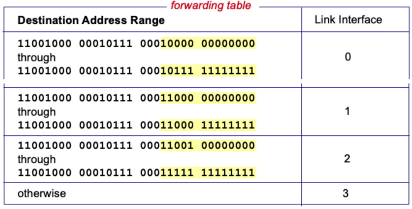
192.168.0.0/16Significa che tutti gli IP da 192.168.0.0 a 192.168.255.255 sono coperti da una sola riga nella tabella. ➡️ In questo caso: una riga = copertura perfetta Semplice da gestire. -
può succedere però che gli indirizzi non si allineino perfettamente, non hanno un intervallo eccezionale 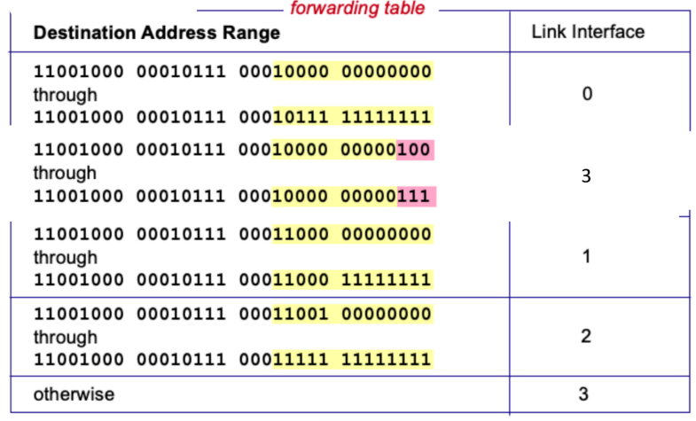 Qui è necessario spezzare l’intervallo e inserire più righe nella tabella per coprire tutte le possibilità Supponiamo ora che tu debba coprire solo un intervallo “strano”, tipo:
da 192.168.0.0 a 192.168.2.255Questo non corrisponde a un singolo blocco CIDR pulito, quindi non puoi scrivere una sola riga come:192.168.0.0/22Perché/22coprirebbe anche192.168.3.x, che non vuoi includere. 👉 Quindi sei costretto a spezzare l’intervallo in più sottoblocchi, tipo:
192.168.0.0/23 → copre da 192.168.0.0 a 192.168.1.255
192.168.2.0/24 → copre da 192.168.2.0 a 192.168.2.255
Ora hai due righe nella tabella per coprire quello che prima speravi di scrivere in una.
cosa significa quello /x?
La
/xindica quanti bit iniziali dell’indirizzo IP rappresentano la parte di rete (sottorete). Un indirizzo IPv4 è lungo 32 bit
- Se scrivi
192.168.0.0/16, stai dicendo: “I primi 16 bit identificano la rete, gli altri 16 bit identificano gli host in quella rete”
Come si gestisce il secondo caso?
Quando un router trova più voci che “matchano” un IP si sceglie sempre quella con il prefisso più lungo (ossia quella che ha più bit uguali).
ESEMPIO
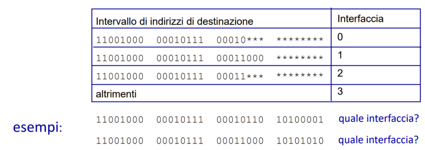
-
Proviamo la prima 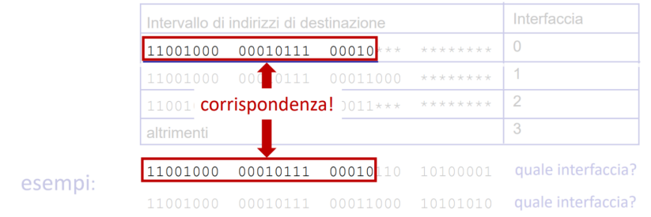
-
Proviamo la terza 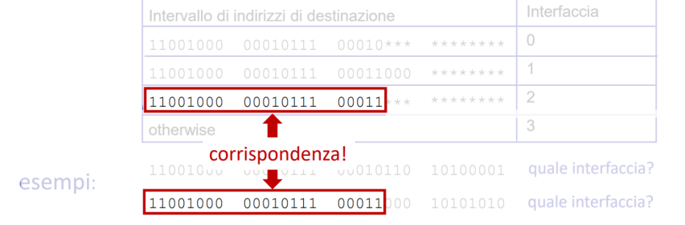
-
Proviamo la seconda 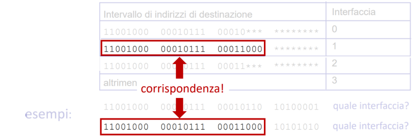
La seconda ha più bit uguali → viene scelta
TCAM + Priority Encoder
Per poter eseguire la ricerca dell’IP corretto (o comunque quello più papabile) viene utilizzata un’architettura particolare.
📦 1. TCAM (Ternary Content Addressable Memory)
È una memoria speciale content addressable in cui
- viene passato un indirizzo IP a 32 bit come input
- e la TCAM dice quale riga corrisponde in un tempo essenzialmente costante
Nel dettaglio, ogni riga TCAM ha
- un prefisso da confrontare
- alcuni bit marcati come
*(definiti “don’t care”), ossia non vengono considerati - un comparatore che restituisce “1” se c’è una corrispondenza
📊 2. Priority Encoder
Quando la TCAM trova più righe valide (quindi a “1”) entra in gioco il Priority Encoder, il quale
- sceglie la riga con la priorità più alta, ossia quella più in alto (foto).
👉 Nota: Le righe con prefissi più lunghi stanno in alto per primeggiare nella selezione.
📥 3. RAM
Dopo aver scelto la porta giusta, il Priority Encoder restituisce il numero di quella riga in binario e lo passa al Decoder della RAM, che mappa quella riga a un’interfaccia di uscita (porta).

🏗️ Struttura di commutazione (switching fabric)
LA struttura di comunicazione è il cuore del router: serve a trasferire i pacchetti dalle porte di ingresso a quelle di uscita.
🎯 Obiettivo
Muovere i pacchetti il più velocemente possibile tra input e output. L’ideale sarebbe avere un tasso di trasferimento della struttura pari a , dove
N= numero di porteR= velocità di ogni singola linea
🔧 Le 3 tipologie di strutture di commutazione

1. Commutazione in memoria 🧠
È il metodo più semplice e vecchio.
- Un router tradizionale usa la CPU per spostare i pacchetti da una parte all’altra
- ogni pacchetto viene copiato in memoria, poi letto e infine inoltrato
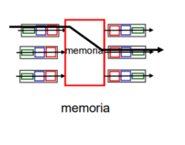
PROBLEMI
- ❌ Limite: la velocità dipende dalla memoria del sistema → non scala bene.
- ⚠️ Richiede 2 accessi alla memoria per ogni pacchetto (scrittura e lettura).
🗨️ Va bene per router lenti o di piccole dimensioni, ma non è adatto ad ambienti ad alta velocità. 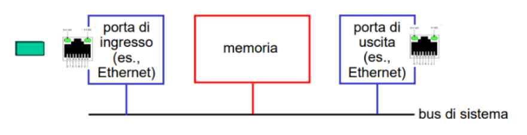
2. Commutazione tramite bus 🚌
Tutte le porte usano un bus condiviso per mandare pacchetti da input a output.
- ✅ È più veloce della commutazione di memoria perché la CPU non viene coinvolta direttamente
- ❌Ma c’è bus contention: solo una trasmissione per volta → colli di bottiglia
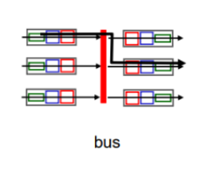
🗨️ È più efficiente della memoria, ma scala poco: quando il traffico aumenta, il bus si satura.
3. Commutazione tramite rete di interconnessione 🕸️
Qui entra in gioco il parallelismo: vengono usati switch multipli collegati in modo strutturato
Abbiamo due approcci
a. Crossbar (matrice di commutazione)
È una griglia : ogni input può essere connesso a ogni output, se non c’è conflitto. 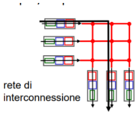
- ✅ Veloce e parallela.
- ❌ Ma costosa e complessa per grandi N.
b. Multistage (reti Clos)
Si usano più stadi di switch piccoli, tipo 2x2 o 4x4, in cascata. 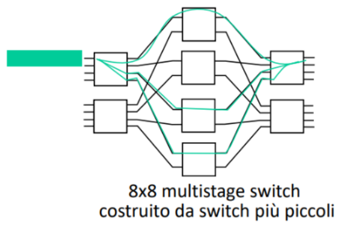
- ✅ Molto scalabile e sfrutta meglio il parallelismo.
- ✅ Permette la commutazione di celle (pacchetti frammentati) → più efficienza.
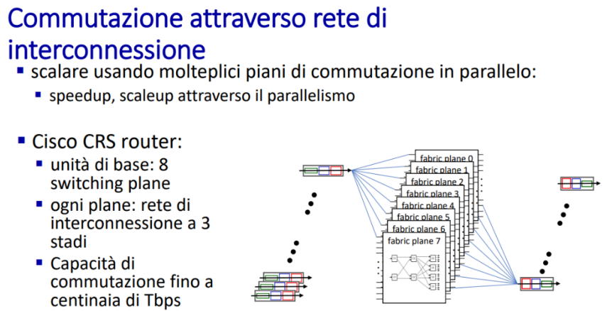
Accodamento sulle porte di ingresso
Come abbiamo visto prima i pacchetti, in un router, entrano in una porta di ingresso e vengono indirizzati verso una porta di uscita. Può capitare però che si formino code in ingresso quando
- una commutazione è lenta
- o ci sono conflitti tra più pacchetti destinati alla stessa uscita
❌ Problema: HOL blocking
È una situazione in cui il primo pacchetto nella coda (in testa) non può essere trasferito, e impedisce anche agli altri dietro di avanzare, anche se andrebbero verso porte libere.
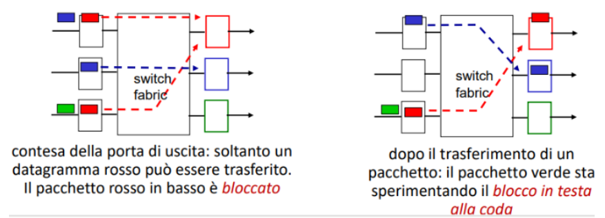 🔽 A sinistra:
- due pacchetti (datagrammi) rossi vogliono uscire dalla stessa porta di uscita
- MA solo uno può passare, l’altro rimane bloccato
- Il pacchetto verde, che potrebbe tranquillamente uscire da un porta di uscita LIBERA, rimane bloccato inutilmente. 👉 È questo il blocco in testa alla coda: chi è davanti blocca tutti.
🔼 A destra:
- una volta che i pacchetti rossi sono usciti, il pacchetto verde può avanzare
- MA è avvenuto un ritardo completamente inutile per colpa del pacchetto in testa
Accodamento in uscita (IMPORTANTE)
Quando i pacchetti passano attraverso la struttura di commutazione, possono arrivare più velocemente di quanto il collegamento di uscita sia in grado di trasmetterli. Questo crea un collo di bottiglia e richiede un meccanismo di buffering, cioè accodamento in attesa della trasmissione.
🎯 Concetti chiave
-
Buffering:
- Serve per mettere in attesa i pacchetti quando la porta di uscita è occupata.
- Se arrivano troppi pacchetti e il buffer è pieno → si perdono pacchetti (overflow).
- Questo porta a ritardi e perdite.
-
Drop policy (politica di scarto):
- Quando il buffer è pieno, quale pacchetto scartare?
- Esistono varie politiche (vedremo tra poco).
-
Disciplina di scheduling (o schedulazione):
- Quando ci sono più pacchetti in coda, quale viene trasmesso per primo?
- Anche qui si possono applicare criteri diversi (vedremo sempre tra poco) 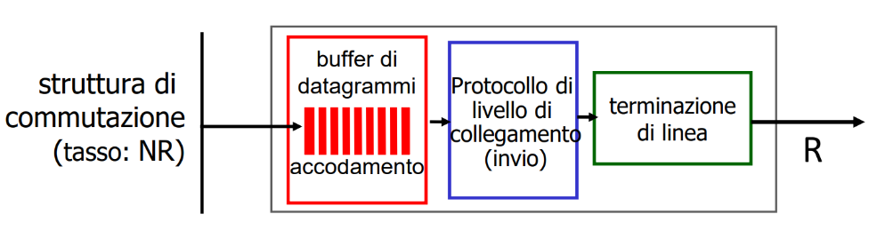
📉 Cosa può succedere se il buffer non è ben gestito?
- Congestione: troppi pacchetti si accumulano.
- Perdita di pacchetti: il buffer si riempie e inizia a scartarli.
- Delay: i pacchetti aspettano più tempo prima di uscire → aumenta la latenza.
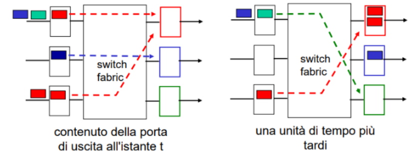 Qui se vedi i pacchetti rossi (a sinistra) entrano tutti dentro la stessa porta e se non viene gestita bene la situazione (a destra) sono cavoli!!
Quanta memoria di buffer è necessaria?
📌 1. Regola empirica (RFC 3439):
Buffer = RTT × C
-
Dove:
- RTT è il round-trip time tipico (es. 250 ms),
- C è la capacità del collegamento (es. 10 Gbps),
-
Esempio:
- Se
C = 10 Gbps → buffer ≈ 2.5 Gbit.
- Se
-
❗ È una regola empirica, detta anche rule of thumb (cioè una stima pratica, non una legge assoluta).
📌 2. Raccomandazione più recente:
Con N flussi TCP contemporanei, il buffer richiesto può essere ridotto:
- Più flussi → più il carico si “distribuisce” → serve meno buffer.
⚠️ Attenzione: troppo buffering può essere un problema!
Bufferbloat:
Se c’è troppa memoria, i pacchetti si accumulano → aumenta l’RTT.
Questo è dannoso soprattutto:
- Nei router domestici,
- Per le app real-time (come videochiamate, giochi online),
- Per TCP, che diventa meno reattivo alla congestione.
L’obiettivo moderno è
Mantenere il collo di bottiglia pieno, ma non troppo pieno.
Gestione del buffer
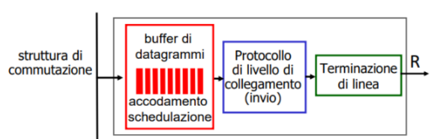
Visto in modo astratto 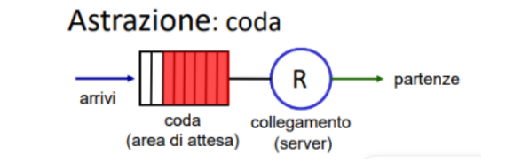
🚨 Cosa succede se è pieno?
🟥 Politica di scarto (drop policy):
-
Tail drop (classico):
- Se il buffer è pieno → si scarta il pacchetto appena arrivato.
- È semplice, ma può causare problemi a TCP (es. molte perdite improvvise).
-
Priorità:
- Alcuni pacchetti hanno più “importanza” (es. voce, controllo) → si scarta il meno prioritario.
-
Marcatura:
- Invece di scartare subito, il router segna i pacchetti per avvisare il mittente di rallentare.
- Per fare ciò vengono utilizzati protocolli come:
- ECN (Explicit Congestion Notification)
- RED (Random Early Detection)
Algoritmi di schedulazione
algoritmi che decidono come gestire i pacchetti da trasmettere
🔵 1. FCFS – First Come, First Served (o FIFO)
📌 Cosa fa:
- Trasmette i pacchetti nell’ordine in cui arrivano alla coda.
- Il primo pacchetto che entra è anche il primo che esce.
È molto semplice MA inutilizzabile in contesti in cui i pacchetti hanno priorità diverse.
🔴 2. Scheduling con Priorità
📌 Cosa fa:
- I pacchetti vengono classificati per classi di priorità (es. alta e bassa).
- La coda con priorità più alta viene sempre servita prima.
⚙️ Come funziona:
- Ogni pacchetto in arrivo viene inserito nella coda corrispondente alla sua priorità.
- Il router cerca la prima coda non vuota (partendo da quella a priorità massima) e serve un pacchetto da lì.
🚫 Limiti:
- Starvation: se arrivano sempre pacchetti ad alta priorità, quelli a bassa potrebbero non uscire mai.

📌 Nota: All’interno di ogni coda si usa FCFS.
🔁 3. Round Robin (RR)
📌 Cosa fa:
- Il traffico è sempre classificato per classi, come nella priorità.
- Invece di servire sempre la classe più importante, il server serve a turno ciascuna coda (una alla volta).
⚙️ Come funziona:
- Scorre ciclicamente tra le code.
- Se una coda ha pacchetti, ne trasmette uno intero e poi passa alla successiva.
✅ Vantaggi:
- Equo: ogni classe riceve attenzione.
- Evita il problema dello starvation.
🚫 Limiti:
- Se una classe ha più pacchetti e altre ne hanno pochi, non riesce a sfruttare bene la banda.
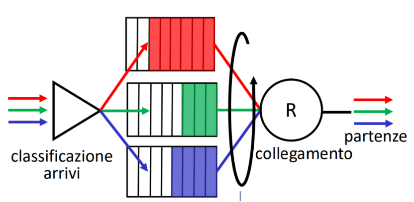
⚖️ 4. Weighted Fair Queuing (WFQ)
📌 Cosa fa:
- È una versione avanzata del Round Robin.
- Ogni coda (classe) riceve una quantità di banda proporzionale a un peso assegnato
⚙️ Formula: dove è il peso della classe i.
✅ Vantaggi:
- Più flessibile: si possono garantire quote minime di banda.
- Supporta QoS (Quality of Service) per servizi critici.
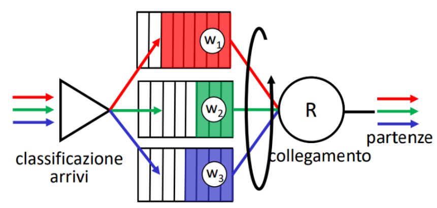
📌 Esempio:
- Se hai 3 code con pesi 5, 3 e 2, allora riceveranno rispettivamente il 50%, 30% e 20% della banda (più o meno).
Riassunto delle ultime tre slide
- Net neutrality: principio secondo cui gli ISP devono trattare tutto il traffico Internet in modo equo, senza blocchi, rallentamenti o priorità a pagamento.
- USA: nel 2015 la FCC impone regole rigide; nel 2017 vengono annullate, puntando solo sulla trasparenza degli ISP.
- Aspetto legale: classificare un ISP come servizio di telecomunicazione o informazione cambia il tipo di regolamentazione applicabile.
INTERNET AL LIVELLO DI RETE
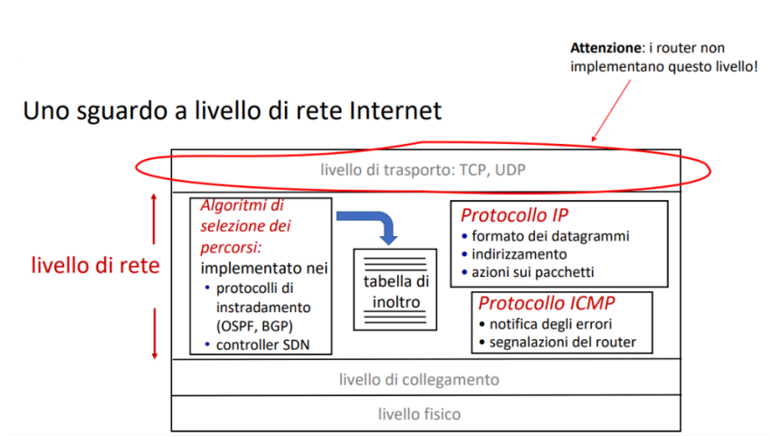
🔧 Formato dei datagrammi IP

🧩 Frammentazione dei datagrammi IP
🧱 Cos’è la frammentazione?
Quando un datagramma IP è troppo grande per essere trasportato su un collegamento di rete (ossia supere l’MTU del link) viene suddiviso in pezzi più piccoli chiamati frammenti.
✂️ Come funziona la frammentazione
-
Un datagramma IP (es. da 4000 byte) deve attraversare un link con MTU da 1500 byte.
-
Viene diviso in frammenti sufficientemente piccoli per entrare in un frame (tipicamente in blocchi da 1480 byte di dati + header IP).
-
Ogni frammento riceve un’intestazione quasi identica all’originale, ma con:
- lo stesso identificatore
- flag per indicare se è l’ultimo frammento
- offset per indicare dove si inserisce nel datagramma completo
🧩 Riassociazione (riassemblaggio)
- I frammenti non vengono ricomposti nei router, ma solo dal destinatario finale.
- Questo è importante perché consente trattamento indipendente dei frammenti nei router intermedi.
ESEMPIO
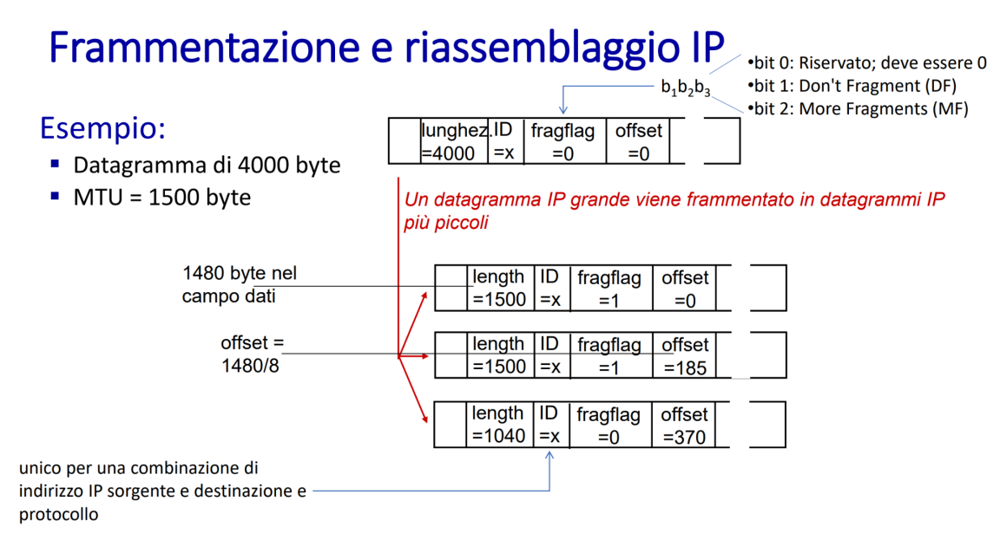
Spiegazione CHATGPT 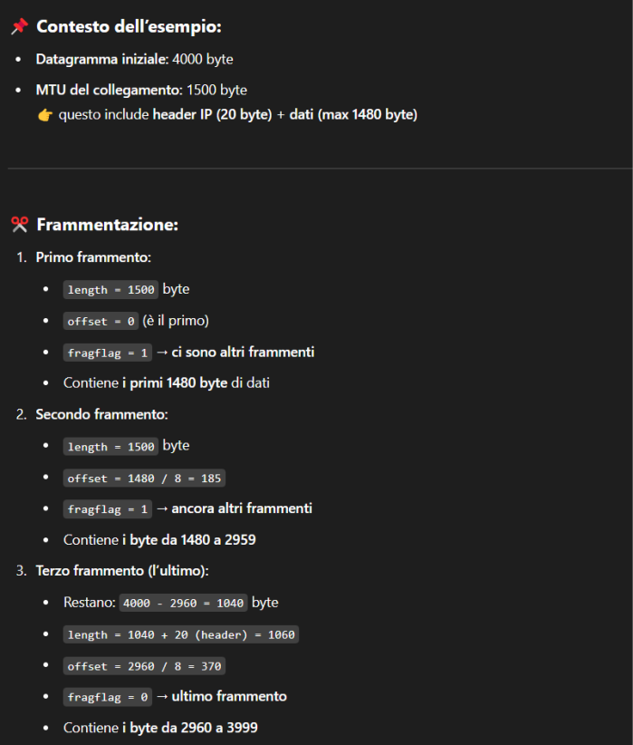
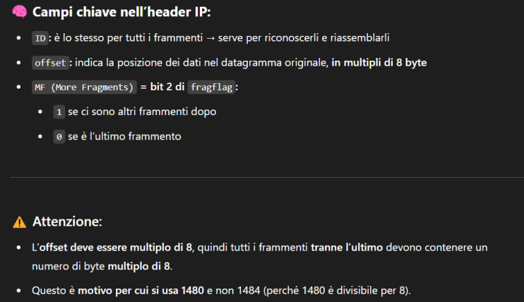
🔚 Frammentazione e Riassemblaggio IP – oggi
🗑️ Deprecato in IPv6
- La frammentazione nei router è stata eliminata con IPv6.
- Solo l’host mittente può frammentare, non più i router intermedi.
- Motivo: evitare complessità, overhead e vulnerabilità nei router.
🧭 Path MTU Discovery (PMTUD)
🎯 Obiettivo
Trovare la MTU massima lungo il percorso dal mittente al destinatario senza frammentare.
⚙️ Come funziona
-
Il mittente invia pacchetti con il bit DF (Don’t Fragment) impostato a 1.
-
Se un router incontra un collegamento con MTU troppo grande:
- non frammenta, ma scarta il pacchetto.
- invia un messaggio ICMP “Destination Unreachable: Fragmentation Required” al mittente.
-
Il mittente riduce la dimensione del pacchetto e riprova.
ICMP bloccato
Molti firewall o router bloccano i messaggi ICMP per motivi di sicurezza.
- Questo rende il PMTUD inaffidabile:
- Il mittente non riceve l’avviso e continua a inviare pacchetti troppo grandi.
- Si verificano ritrasmissioni inutili e perdita di performance.
🔄 Alternative più robuste (mitigazioni):
- Durante l’handshake TCP, i dispositivi possono negoziare il valore MSS (Maximum Segment Size) per evitare l’invio di pacchetti troppo grandi.
- Si agisce all’inizio della connessione, rendendo la comunicazione più stabile.
📍 Indirizzamento IP – Introduzione
Come già sappiamo, un indirizzo IP è un identificatore univoco a 32 bit, assegnato a ogni interfaccia di rete.
Un’interfaccia invece, è un punto di connessione fisico o logico attraverso cui un dispositivo (host o router) si collega a una rete.
- Ogni interfaccia ha un indirizzo IP.
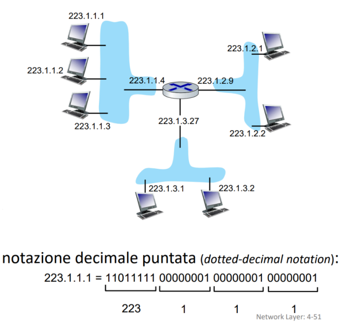
Come si collegano effettivamente le interfacce IP?
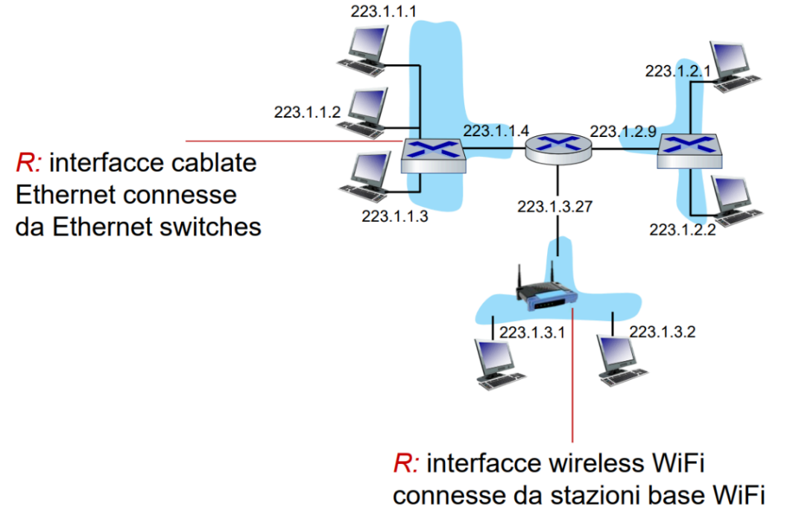
Però, per ora, non c’è bisogno di preoccuparsi di come sono fisicamente collegate le interfacce (lo vedremo a livello di collegamento).
Sottoreti (subnet)
🥅 Cos’è una sottorete (subnet)?
Una sottorete è un gruppo di dispositivi (host e router) che possono comunicare tra loro direttamente, senza dover passare attraverso un router. Questo è importante per ridurre traffico e latenza, e per gestire meglio le risorse.
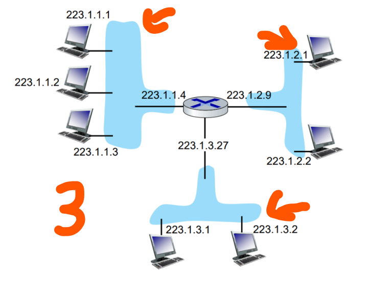 questa rete è composta da 3 sottoreti
📌 In pratica: tutti i dispositivi collegati allo stesso switch (fisico o virtuale) e con indirizzi IP simili fanno parte della stessa sottorete.
🔧Struttura di un indirizzo IP
Un indirizzo IP è lungo 32 bit ed è composto da due parti:
- Parte di rete (sottorete): identifica a quale rete appartiene il dispositivo.
- Parte dell’host: identifica il singolo dispositivo dentro quella rete.
🏗️ Come si creano le sottoreti?
La procedura consiste nello “spezzare” una rete più grande in reti più piccole.
Si fa “scollegando” logicamente le interfacce, così da creare “isole” di dispositivi separati tra loro dai router.
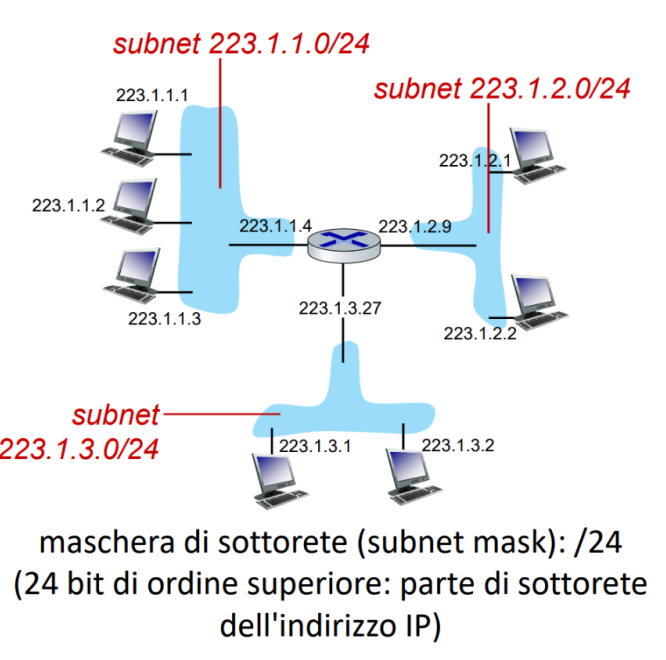
📌 Le reti così ottenute:
- hanno indirizzi IP simili (es. 223.1.1.1, 223.1.1.2… → stessa subnet),
- sono isolate l’una dall’altra,
- comunicano tramite router.
Esempio con una rete molto più grande
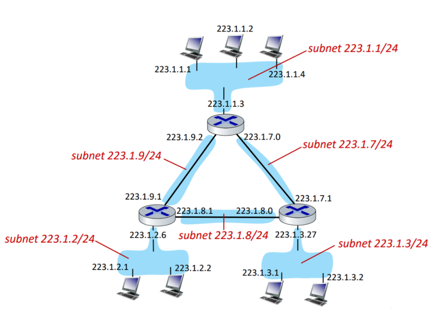
Indirizzamento IP con CIDR
Il CIDR è un metodo moderno per rappresentare indirizzi IP e sottoreti senza basarsi sulle classi tradizionali (A, B, C). È molto più flessibile, perché permette di scegliere una lunghezza arbitraria per la parte di rete dell’indirizzo.
📌 Formato CIDR
L’indirizzo è scritto così:
a.b.c.d/x
dove
a.b.c.d→ indirizzo IP./x→ indica quanti bit iniziali appartengono alla parte di rete (sottorete).
Esempio:
200.23.16.0/23 → i primi 23 bit identificano la sottorete, i restanti bit sono per l’host.
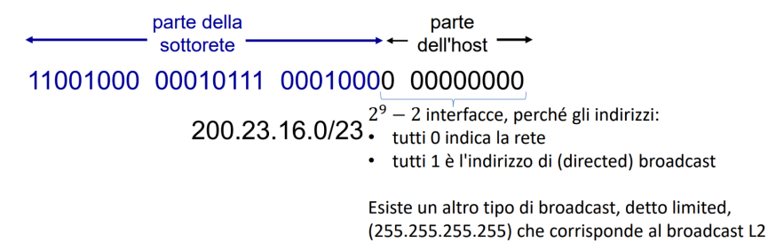
Metodo vecchio
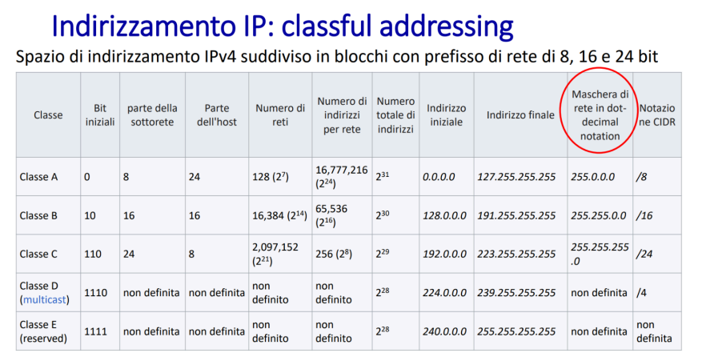
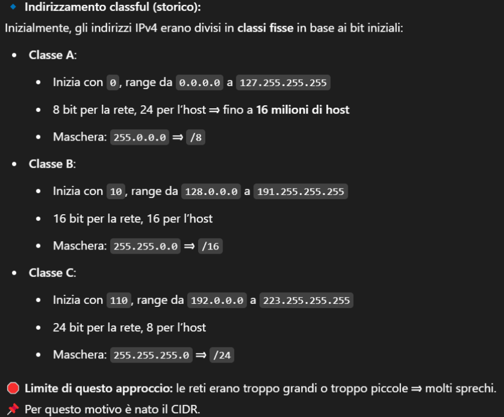